<!DOCTYPE html>
<!-- saved from url=(0054)http://www.hankcs.com/ml/conditional-random-field.html -->
<html><head><meta http-equiv="Content-Type" content="text/html; charset=UTF-8">

<link rel="dns-prefetch" href="http://apps.bdimg.com/">
<meta http-equiv="X-UA-Compatible" content="IE=11,IE=10,IE=9,IE=8">
<meta name="viewport" content="width=device-width, initial-scale=1.0, user-scalable=0, minimum-scale=1.0, maximum-scale=1.0">
<meta name="apple-mobile-web-app-title" content="码农场">
<meta http-equiv="Cache-Control" content="no-siteapp">
<title>条件随机场-码农场</title>
<link rel="dns-prefetch" href="http://apps.bdimg.com/">
<link rel="dns-prefetch" href="http://s.w.org/">
		<script async="" src="./conditional-random-field_files/analytics.js.下载"></script><script src="./conditional-random-field_files/ca-pub-1152644711996772.js.下载"></script><script type="text/javascript">
			window._wpemojiSettings = {"baseUrl":"https:\/\/s.w.org\/images\/core\/emoji\/2.2.1\/72x72\/","ext":".png","svgUrl":"https:\/\/s.w.org\/images\/core\/emoji\/2.2.1\/svg\/","svgExt":".svg","source":{"concatemoji":"http:\/\/www.hankcs.com\/wp-includes\/js\/wp-emoji-release.min.js?ver=4.7.5"}};
			!function(a,b,c){function d(a){var b,c,d,e,f=String.fromCharCode;if(!k||!k.fillText)return!1;switch(k.clearRect(0,0,j.width,j.height),k.textBaseline="top",k.font="600 32px Arial",a){case"flag":return k.fillText(f(55356,56826,55356,56819),0,0),!(j.toDataURL().length<3e3)&&(k.clearRect(0,0,j.width,j.height),k.fillText(f(55356,57331,65039,8205,55356,57096),0,0),b=j.toDataURL(),k.clearRect(0,0,j.width,j.height),k.fillText(f(55356,57331,55356,57096),0,0),c=j.toDataURL(),b!==c);case"emoji4":return k.fillText(f(55357,56425,55356,57341,8205,55357,56507),0,0),d=j.toDataURL(),k.clearRect(0,0,j.width,j.height),k.fillText(f(55357,56425,55356,57341,55357,56507),0,0),e=j.toDataURL(),d!==e}return!1}function e(a){var c=b.createElement("script");c.src=a,c.defer=c.type="text/javascript",b.getElementsByTagName("head")[0].appendChild(c)}var f,g,h,i,j=b.createElement("canvas"),k=j.getContext&&j.getContext("2d");for(i=Array("flag","emoji4"),c.supports={everything:!0,everythingExceptFlag:!0},h=0;h<i.length;h++)c.supports[i[h]]=d(i[h]),c.supports.everything=c.supports.everything&&c.supports[i[h]],"flag"!==i[h]&&(c.supports.everythingExceptFlag=c.supports.everythingExceptFlag&&c.supports[i[h]]);c.supports.everythingExceptFlag=c.supports.everythingExceptFlag&&!c.supports.flag,c.DOMReady=!1,c.readyCallback=function(){c.DOMReady=!0},c.supports.everything||(g=function(){c.readyCallback()},b.addEventListener?(b.addEventListener("DOMContentLoaded",g,!1),a.addEventListener("load",g,!1)):(a.attachEvent("onload",g),b.attachEvent("onreadystatechange",function(){"complete"===b.readyState&&c.readyCallback()})),f=c.source||{},f.concatemoji?e(f.concatemoji):f.wpemoji&&f.twemoji&&(e(f.twemoji),e(f.wpemoji)))}(window,document,window._wpemojiSettings);
		</script><script src="./conditional-random-field_files/wp-emoji-release.min.js.下载" type="text/javascript" defer=""></script>
		<style type="text/css">
img.wp-smiley,
img.emoji {
	display: inline !important;
	border: none !important;
	box-shadow: none !important;
	height: 1em !important;
	width: 1em !important;
	margin: 0 .07em !important;
	vertical-align: -0.1em !important;
	background: none !important;
	padding: 0 !important;
}
</style>
<link rel="stylesheet" id="_bootstrap-css" href="./conditional-random-field_files/bootstrap.min.css" type="text/css" media="all">
<link rel="stylesheet" id="_fontawesome-css" href="./conditional-random-field_files/font-awesome.min.css" type="text/css" media="all">
<link rel="stylesheet" id="_main-css" href="./conditional-random-field_files/main.css" type="text/css" media="all">
<script type="text/javascript" src="./conditional-random-field_files/jquery.min.js.下载"></script>
<link rel="https://api.w.org/" href="http://www.hankcs.com/wp-json/">
<link rel="prev" title="计算指数函数的和的对数" href="http://www.hankcs.com/ml/computing-log-sum-exp.html">
<link rel="next" title="CRF++代码分析" href="http://www.hankcs.com/ml/crf-code-analysis.html">
<link rel="canonical" href="http://www.hankcs.com/ml/conditional-random-field.html">
<link rel="shortlink" href="http://www.hankcs.com/?p=7786">
<link rel="alternate" type="application/json+oembed" href="http://www.hankcs.com/wp-json/oembed/1.0/embed?url=http%3A%2F%2Fwww.hankcs.com%2Fml%2Fconditional-random-field.html">
<link rel="alternate" type="text/xml+oembed" href="http://www.hankcs.com/wp-json/oembed/1.0/embed?url=http%3A%2F%2Fwww.hankcs.com%2Fml%2Fconditional-random-field.html&amp;format=xml">
<meta name="keywords" content="CRF, 《统计学习方法》, 维特比算法, 机器学习">
<meta name="description" content="本文是《统计学习方法》第11章的笔记，在课本的基础上加入了自己的注释和理解。作为CRF的入门读物，著名的几篇英文教程难度稍高，还是李航博士的《方法》比较适合初学者。其拟牛顿法讲解可以直接与CRF++的代码对应，实为难得。我还单独写了篇《CRF++代码分析》，与本文互为参考。 条件随机场（conditional random field，CRF)是给定一组输入">
<link rel="icon" href="http://www.hankcs.com/wp-content/uploads/2017/04/cropped-Hankcs_512-32x32.png" sizes="32x32">
<link rel="icon" href="http://www.hankcs.com/wp-content/uploads/2017/04/cropped-Hankcs_512-192x192.png" sizes="192x192">
<link rel="apple-touch-icon-precomposed" href="http://www.hankcs.com/wp-content/uploads/2017/04/cropped-Hankcs_512-180x180.png">
<meta name="msapplication-TileImage" content="http://www.hankcs.com/wp-content/uploads/2017/04/cropped-Hankcs_512-270x270.png">
<link rel="shortcut icon" href="http://www.hankcs.com/favicon.ico">
<!--[if lt IE 9]><script src="http://www.hankcs.com/wp-content/themes/dux/js/libs/html5.min.js"></script><![endif]-->
<!--
	generated 53860 seconds ago
	generated in 0.244 seconds
	served from batcache in 0.003 seconds
	expires in 32540 seconds
-->
<script async="" data-requirecontext="_" data-requiremodule="main" src="./conditional-random-field_files/main.js.下载"></script><script src="./conditional-random-field_files/share.js.下载"></script><script async="" data-requirecontext="_" data-requiremodule="lazyload" src="./conditional-random-field_files/lazyload.min.js.下载"></script><script async="" data-requirecontext="_" data-requiremodule="signpop" src="./conditional-random-field_files/signpop.js.下载"></script><script async="" data-requirecontext="_" data-requiremodule="comment" src="./conditional-random-field_files/comment.js.下载"></script><link href="./conditional-random-field_files/share.css" rel="styleSheet" type="text/css"><script type="text/javascript" charset="utf-8" src="./conditional-random-field_files/getnum"></script></head>
<body class="post-template-default single single-post postid-7786 single-format-standard comment-open site-layout-2">
<header class="header">
	<div class="container">
		<div class="logo"><a href="http://www.hankcs.com/" title="码农场-自然语言处理、机器学习算法">码农场</a></div>		<a href="http://www.hankcs.com/" title="码农场-自然语言处理、机器学习算法" class="brand">放牧代码和思想
<br>专注自然语言处理、机器学习算法</a>		<ul class="site-nav site-navbar">
			<li id="menu-item-1834" class="menu-item menu-item-type-taxonomy menu-item-object-category menu-item-1834"><a href="http://www.hankcs.com/program/cpp/">C++</a></li>
<li id="menu-item-1835" class="menu-item menu-item-type-taxonomy menu-item-object-category menu-item-1835"><a href="http://www.hankcs.com/program/java/">Java</a></li>
<li id="menu-item-5754" class="menu-item menu-item-type-taxonomy menu-item-object-category current-post-ancestor current-menu-parent current-post-parent menu-item-5754"><a href="http://www.hankcs.com/ml/">机器学习</a></li>
<li id="menu-item-2954" class="menu-item menu-item-type-taxonomy menu-item-object-category menu-item-has-children menu-item-2954"><a href="http://www.hankcs.com/nlp/">NLP</a>
<ul class="sub-menu">
	<li id="menu-item-4344" class="menu-item menu-item-type-taxonomy menu-item-object-category menu-item-4344"><a href="http://www.hankcs.com/nlp/corpus/">语料库</a></li>
	<li id="menu-item-4342" class="menu-item menu-item-type-taxonomy menu-item-object-category menu-item-4342"><a href="http://www.hankcs.com/nlp/segment/">中文分词</a></li>
	<li id="menu-item-4343" class="menu-item menu-item-type-taxonomy menu-item-object-category menu-item-4343"><a href="http://www.hankcs.com/nlp/ner/">命名实体识别</a></li>
	<li id="menu-item-4479" class="menu-item menu-item-type-taxonomy menu-item-object-category menu-item-4479"><a href="http://www.hankcs.com/nlp/parsing/">句法分析</a></li>
</ul>
</li>
<li id="menu-item-1837" class="menu-item menu-item-type-taxonomy menu-item-object-category menu-item-1837"><a href="http://www.hankcs.com/program/algorithm/">算法</a></li>
<li id="menu-item-1839" class="menu-item menu-item-type-taxonomy menu-item-object-category menu-item-1839"><a href="http://www.hankcs.com/software/">软件</a></li>
<li id="menu-item-1838" class="menu-item menu-item-type-taxonomy menu-item-object-category menu-item-has-children menu-item-1838"><a href="http://www.hankcs.com/nihongonote/">日语</a>
<ul class="sub-menu">
	<li id="menu-item-1860" class="menu-item menu-item-type-taxonomy menu-item-object-category menu-item-1860"><a href="http://www.hankcs.com/nihongonote/riyurimen/">日语入门</a></li>
	<li id="menu-item-1861" class="menu-item menu-item-type-taxonomy menu-item-object-category menu-item-1861"><a href="http://www.hankcs.com/nihongonote/listening/">日语听力</a></li>
	<li id="menu-item-1863" class="menu-item menu-item-type-taxonomy menu-item-object-category menu-item-has-children menu-item-1863"><a href="http://www.hankcs.com/nihongonote/tekusuto/">日语综合教程</a>
	<ul class="sub-menu">
		<li id="menu-item-2190" class="menu-item menu-item-type-taxonomy menu-item-object-category menu-item-2190"><a href="http://www.hankcs.com/nihongonote/tekusuto/disance/">第三册</a></li>
		<li id="menu-item-2192" class="menu-item menu-item-type-taxonomy menu-item-object-category menu-item-2192"><a href="http://www.hankcs.com/nihongonote/tekusuto/daiyonnsatu/">第四册</a></li>
		<li id="menu-item-2191" class="menu-item menu-item-type-taxonomy menu-item-object-category menu-item-2191"><a href="http://www.hankcs.com/nihongonote/tekusuto/5/">第五册</a></li>
		<li id="menu-item-2702" class="menu-item menu-item-type-taxonomy menu-item-object-category menu-item-2702"><a href="http://www.hankcs.com/nihongonote/tekusuto/%e7%ac%ac%e5%85%ad%e5%86%8c/">第六册</a></li>
		<li id="menu-item-3604" class="menu-item menu-item-type-taxonomy menu-item-object-category menu-item-3604"><a href="http://www.hankcs.com/nihongonote/tekusuto/%e7%ac%ac%e4%b8%83%e5%86%8c/">第七册</a></li>
	</ul>
</li>
	<li id="menu-item-1859" class="menu-item menu-item-type-taxonomy menu-item-object-category menu-item-has-children menu-item-1859"><a href="http://www.hankcs.com/nihongonote/fd2/">新编日语阅读文选</a>
	<ul class="sub-menu">
		<li id="menu-item-2187" class="menu-item menu-item-type-taxonomy menu-item-object-category menu-item-2187"><a href="http://www.hankcs.com/nihongonote/fd2/c1/">第一册</a></li>
		<li id="menu-item-2189" class="menu-item menu-item-type-taxonomy menu-item-object-category menu-item-2189"><a href="http://www.hankcs.com/nihongonote/fd2/c2/">第二册</a></li>
		<li id="menu-item-2188" class="menu-item menu-item-type-taxonomy menu-item-object-category menu-item-2188"><a href="http://www.hankcs.com/nihongonote/fd2/c3/">第三册</a></li>
	</ul>
</li>
	<li id="menu-item-1858" class="menu-item menu-item-type-taxonomy menu-item-object-category menu-item-1858"><a href="http://www.hankcs.com/nihongonote/jpkaiwa/">日语商务贸易会话</a></li>
</ul>
</li>
<li id="menu-item-1843" class="menu-item menu-item-type-post_type menu-item-object-page menu-item-1843"><a href="http://www.hankcs.com/about/">关于</a></li>
							<li class="navto-search"><a href="javascript:;" class="search-show active"><i class="fa fa-search"></i></a></li>
					</ul>
		<div class="topbar">
			<ul class="site-nav topmenu">
				<li id="menu-item-5755" class="menu-item menu-item-type-custom menu-item-object-custom menu-item-5755"><a href="http://www.hankcs.com/about/#comments"><i class="fa fa-comment"></i> 留言板</a></li>
				<li><a target="_blank" rel="external nofollow" href="https://github.com/hankcs"><i class="fa fa-github-alt"></i> GitHub</a></li>                                <li><a target="_blank" rel="external nofollow" href="http://weibo.com/hankcs"><i class="fa fa-weibo"></i> 微博</a></li>                                <li><a target="_blank" rel="external nofollow" href="https://twitter.com/hankcs"><i class="fa fa-twitter"></i> Twitter</a></li>                                <li><a target="_blank" href="http://www.hankcs.com/feed"><i class="fa fa-rss"></i> RSS订阅</a></li>			</ul>
							&nbsp; &nbsp; <i class="fa fa-bullhorn url"></i> 博主不用扣扣，公事请博客留言，私事请微博私信。开源项目一律GitHub见，发错地方恕不回复，谢谢。					</div>
		<i class="fa fa-bars m-icon-nav"></i>
	</div>
</header>
<div class="site-search">
	<div class="container">
		<form method="get" class="site-search-form" action="http://www.hankcs.com/"><input class="search-input" name="s" type="text" placeholder="输入关键字" value=""><button class="search-btn" type="submit"><i class="fa fa-search"></i></button></form>	</div>
</div><section class="container">
	<div class="content-wrap">
	<div class="content">
				<header class="article-header">
			<h1 class="article-title"><a href="http://www.hankcs.com/ml/conditional-random-field.html">条件随机场</a></h1>
			<div class="article-meta">
				<span class="item">
					<a href="http://www.hankcs.com/">码农场</a> <small>&gt;</small> <a href="http://www.hankcs.com/ml/">机器学习</a><span class="muted"></span>				</span>
				<span class="item">2016-08-22</span>
																<span class="item post-views">阅读(2906)</span>				<span class="item"><a class="pc" href="http://www.hankcs.com/ml/conditional-random-field.html#respond">评论(0)</a></span>				<span class="item"></span>
			</div>
		</header>
		<article class="article-content">
			<div class="asb asb-post asb-post-01"><script async="" src="./conditional-random-field_files/adsbygoogle.js.下载"></script>
<!-- 文章页 - 页面标题下 728 90 -->
<ins class="adsbygoogle" style="display:inline-block;width:728px;height:90px" data-ad-client="ca-pub-1152644711996772" data-ad-slot="5413029241" data-adsbygoogle-status="done"><ins id="aswift_0_expand" style="display:inline-table;border:none;height:90px;margin:0;padding:0;position:relative;visibility:visible;width:728px;background-color:transparent"><ins id="aswift_0_anchor" style="display:block;border:none;height:90px;margin:0;padding:0;position:relative;visibility:visible;width:728px;background-color:transparent"><iframe width="728" height="90" frameborder="0" marginwidth="0" marginheight="0" vspace="0" hspace="0" allowtransparency="true" scrolling="no" allowfullscreen="true" onload="var i=this.id,s=window.google_iframe_oncopy,H=s&amp;&amp;s.handlers,h=H&amp;&amp;H[i],w=this.contentWindow,d;try{d=w.document}catch(e){}if(h&amp;&amp;d&amp;&amp;(!d.body||!d.body.firstChild)){if(h.call){setTimeout(h,0)}else if(h.match){try{h=s.upd(h,i)}catch(e){}w.location.replace(h)}}" id="aswift_0" name="aswift_0" style="left:0;position:absolute;top:0;width:728px;height:90px;" src="./conditional-random-field_files/saved_resource.html"></iframe></ins></ins></ins>
<script>
(adsbygoogle = window.adsbygoogle || []).push({});
</script></div>			<div class="post_nav" style="width: 0px;"><div class="post_nav_side" style="height: 100%;"><div class="post_nav_top"><p>目录</p></div><div class="post_nav_bottom"></div><span class="post_nav_close icon-remove" title="关闭目录" style="opacity: 0; display: none;"><i class="fa fa-times"></i></span></div><ul class="post_nav_content"><li class="h2_nav"><a href="http://www.hankcs.com/ml/conditional-random-field.html#h2-0">概率无向图模型</a><i class="post_nav_dot"></i></li>
<li class="h3_nav active"><a href="http://www.hankcs.com/ml/conditional-random-field.html#h3-1">模型定义</a><i class="post_nav_dot"></i></li>
<li class="h3_nav"><a href="http://www.hankcs.com/ml/conditional-random-field.html#h3-2">概率无向图模型的因子分解</a><i class="post_nav_dot"></i></li>
<li class="h2_nav"><a href="http://www.hankcs.com/ml/conditional-random-field.html#h2-3">条件随机场的定义与形式</a><i class="post_nav_dot"></i></li>
<li class="h3_nav"><a href="http://www.hankcs.com/ml/conditional-random-field.html#h3-4">条件随机场的定义</a><i class="post_nav_dot"></i></li>
<li class="h3_nav"><a href="http://www.hankcs.com/ml/conditional-random-field.html#h3-5">条件随机场的参数化形式</a><i class="post_nav_dot"></i></li>
<li class="h3_nav"><a href="http://www.hankcs.com/ml/conditional-random-field.html#h3-6">条件随机场的简化形式</a><i class="post_nav_dot"></i></li>
<li class="h3_nav"><a href="http://www.hankcs.com/ml/conditional-random-field.html#h3-7">条件随机场的矩阵形式</a><i class="post_nav_dot"></i></li>
<li class="h2_nav"><a href="http://www.hankcs.com/ml/conditional-random-field.html#h2-8">条件随机场的概率计算问题</a><i class="post_nav_dot"></i></li>
<li class="h3_nav"><a href="http://www.hankcs.com/ml/conditional-random-field.html#h3-9">前向-后向算法</a><i class="post_nav_dot"></i></li>
<li class="h3_nav"><a href="http://www.hankcs.com/ml/conditional-random-field.html#h3-10">概率计算</a><i class="post_nav_dot"></i></li>
<li class="h3_nav"><a href="http://www.hankcs.com/ml/conditional-random-field.html#h3-11">期望值的计算</a><i class="post_nav_dot"></i></li>
<li class="h2_nav"><a href="http://www.hankcs.com/ml/conditional-random-field.html#h2-12">条件随机场的学习算法</a><i class="post_nav_dot"></i></li>
<li class="h3_nav"><a href="http://www.hankcs.com/ml/conditional-random-field.html#h3-13">改进的迭代尺度法</a><i class="post_nav_dot"></i></li>
<li class="h3_nav"><a href="http://www.hankcs.com/ml/conditional-random-field.html#h3-14">拟牛顿法</a><i class="post_nav_dot"></i></li>
<li class="h2_nav"><a href="http://www.hankcs.com/ml/conditional-random-field.html#h2-15">条件随机场的预测算法</a><i class="post_nav_dot"></i></li>
<li class="h2_nav"><a href="http://www.hankcs.com/ml/conditional-random-field.html#h2-16">CRF实现</a><i class="post_nav_dot"></i></li>
<li class="h2_nav"><a href="http://www.hankcs.com/ml/conditional-random-field.html#h2-17">Reference</a><i class="post_nav_dot"></i></li>
</ul></div><p style="text-indent: 2em;"><span style="text-indent: 2em;">本文是<a href="http://www.hankcs.com/tag/%E3%80%8A%E7%BB%9F%E8%AE%A1%E5%AD%A6%E4%B9%A0%E6%96%B9%E6%B3%95%E3%80%8B/" target="_blank" style="text-indent: 32px; white-space: normal;">《统计学习方法》</a><span style="text-indent: 32px;">第11章的笔记，在课本的基础上加入了自己的注释和理解。作为CRF的入门读物，著名的几篇英文教程难度稍高，还是李航博士的《方法》比较适合初学者。其拟牛顿法讲解可以直接与CRF++的代码对应，实为难得。我还单独写了篇<a href="http://www.hankcs.com/ml/crf-code-analysis.html" target="_blank">《CRF++代码分析》</a></span></span>，与本文互为参考。 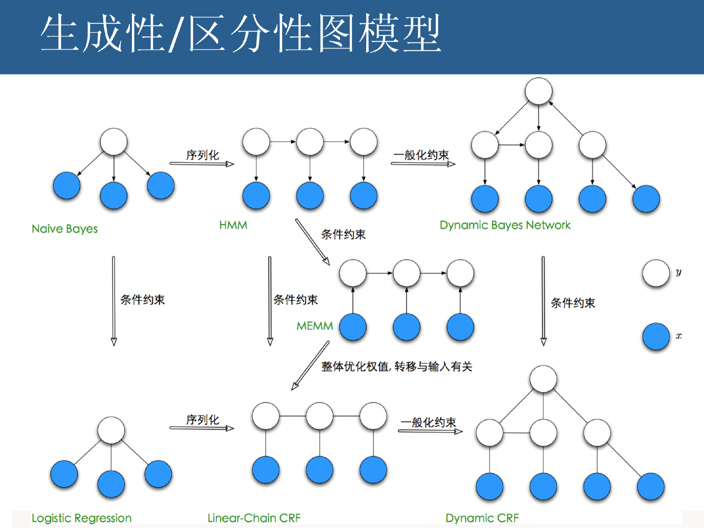</p>
<p style="text-indent: 2em;"><span style="text-indent: 2em;">条件随机场（conditional random field，CRF)是给定一组输入随机变量条件下另一组输出随机变量的条件概率分布模型，其特点是假设输出随机变量构成马尔可夫随机场。条件随机场可以用于不同的预测问题，本章仅论及它在标注问题的应用。因此主要讲述线性链（linear chain)条件随机场，这时，问题变成了由输入序列对输出序列预测的判别模型，形式为对数线性模型，其学习方法通常是极大似然估计或正则化的极大似然估计。线性链条件随机场应用于标注问题是由Lafferty等人于2001年提出的。</span></p>
<p style="text-indent: 2em;">本章首先介绍概率无向图模型，然后叙述条件随机场的定义和各种表示方法，最后介绍条件随机场的3个基本问题：概率计算问题、学习问题和预测问题。</p>
<h2 id="h2-0">概率无向图模型</h2>
<p style="text-indent: 2em;">概率无向图模型（probabilistic undirected graphical model)，又称为马尔可夫随机场（Markov random field)，是一个可以由无向图表示的联合概率分布。本节首先叙述概率无向图模型的定义，然后介绍概率无向图模型的因子分解。</p>
<h3 id="h3-1">模型定义</h3>
<p style="text-indent: 2em;">先啰嗦一下图的定义：</p>
<p style="text-indent: 2em;">图（graph)是由结点（node)及连接结点的边（edge)组成的集合。结点和边分别记作v和e,结点和边的集合分别记作V和E，图记作G=(V,E)。无向图是指边没有方向的图。</p>
<p style="text-indent: 2em;">概率图模型（probabilistic graphical model)是由图表示的概率分布。设有联合概率分布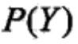，是一组随机变量。由无向图<span style="text-indent: 32px;">G=(V,E)</span>表示概率分布。即在图G中，结点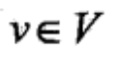表示一个随机变量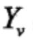，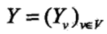；边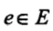表示随机变量之间的概率依赖关系。</p>
<p style="text-indent: 2em;">给定一个联合概率分布和表示它的无向图G。首先定义无向图表示的随机变量之间存在的成对马尔可夫性（pairwise Markov property)、局部马尔可夫性（local Markov property)和全局马尔可夫性（global Markov property)。</p>
<p style="text-indent: 2em;"><strong>成对马尔可夫性</strong>：设u和v是无向图G中任意两个没有边连接的结点，结点u和v分别对应随机变量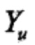和。其他所有结点为O（集合），对应的随机变量组是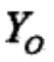。成对马尔可夫性是指给定随机变量组的条件下随机变量和是条件独立的，即</p>
<p style="text-align:center">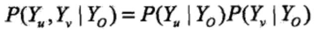</p>
<p style="text-indent: 2em;">其实这么定义有些啰嗦了，一句话，没有直连边的任意两个节点都是独立的。</p>
<p style="text-indent: 2em;"><strong>局部马尔可夫性</strong>：设是无向图G中任意一个结点，W是与v有边连接的所有结点，<span style="text-indent: 32px;">O</span>是v,W以外的其他所有结点。v表示的随机变量是,W表示的随机变量组是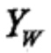，O表示的随机变量组是。局部马尔可夫性是指在给定随机变量组的条件下随机变量与随机变量组是独立的，即</p>
<p style="text-align:center">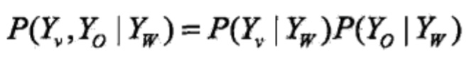</p>
<p style="text-indent: 2em;">在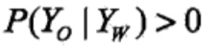时，等价地，</p>
<p style="text-align:center">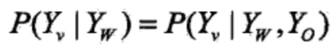</p>
<p></p>
<p style="text-indent: 2em;">下图表示了局部马尔可夫性。</p>
<p style="text-align:center">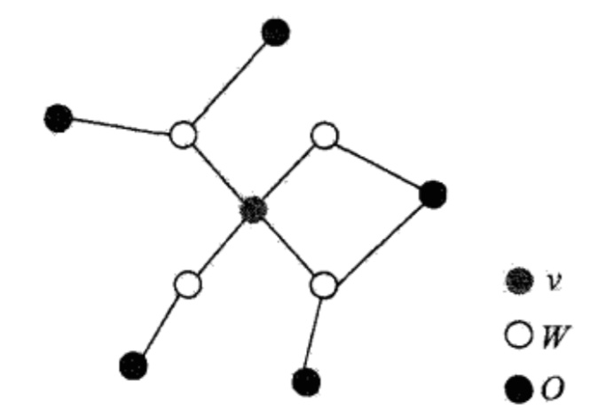</p>
<p style="text-indent: 2em;">我觉得局部马尔可夫性就是成对马尔可夫性的推论。</p>
<p style="text-indent: 2em;"><strong>全局马尔可夫性</strong>：设结点集合A，B是在无向图G中被结点集合C分开的任意结点集合，如图所示。结点集合A，B和C所对应的随机变量组分别是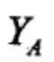,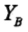和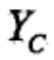。全局马尔可夫性是指给定随机变量组条件下随机变量组和是条件独立的，即</p>
<p style="text-align:center">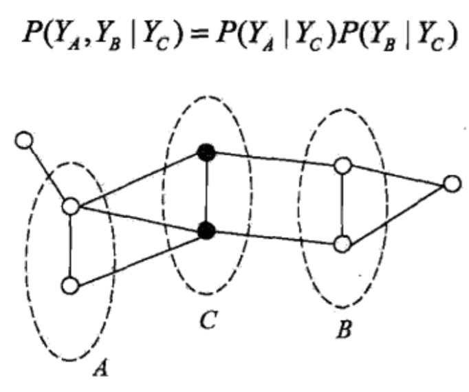</p>
<p style="text-indent: 2em;">上述成对的、局部的、全局的马尔可夫性定义是等价的。</p>
<p style="text-indent: 2em;">下面定义概率无向图模型。</p>
<p style="text-indent: 2em;">定义(<strong>概率无向图模型</strong>）设有联合概率分布,由无向图<span style="text-indent: 32px;">G=(V,E)</span>表示，在图G中，结点表示随机变量，边表示随机变量之间的依赖关系。如果联合概率分布满足成对、局部或全局马尔可夫性，就称此联合概率分布为概率无向图模型(probability undirected graphical model)，或马尔可夫随机场(<span style="text-indent: 32px;">Markov</span> random field)。</p>
<p style="text-indent: 2em;">以上是概率无向图模型的定义，实际上，我们更关心的是如何求其联合概率分布。对给定的概率无向图模型，我们希望将整体的联合概率写成若干子联合概率的乘积的形式，也就是将联合概率进行因子分解，这样便于模型的学习与计算。事实上，概率无向图模型的最大特点就是易于因子分解。下面介绍这一结果。</p>
<h3 id="h3-2"><span style="text-indent: 2em;">概率无向图模型的因子分解</span></h3>
<p style="text-indent: 2em;">首先给出无向图中的团与最大团的定义。</p>
<p style="text-indent: 2em;">定义(团与最大团）无向图G中任何两个结点均有边连接的结点子集称为团（clique)。若C是无向图G的一个团，并且不能再加进任何一个G的结点使其成为一个更大的团，则称此C为最大团（maximal clique)。</p>
<p style="text-indent: 2em;">下图表示由4个结点组成的无向图。图中由2个结点组成的团有5个:{y1,y2},{y2,y3}，{y3,y4}和{y4,y2}，{y1,y3}。有2个最大团：{y1,y2,y3}和{y2,y3,y4}。而{y1,y2,y3,y4}不是一个团，因为y1和y4没有边连接。</p>
<p style="text-align:center">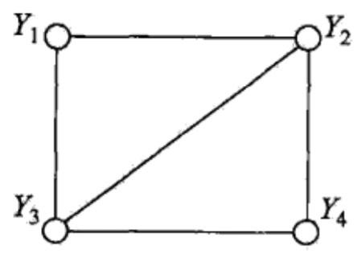</p>
<p style="text-indent: 2em;">将概率无向图模型的联合概率分布表示为其最大团上的随机变量的函数的乘积形式的操作，称为概率无向图模型的因子分解（factorization)。</p>
<p style="text-indent: 2em;">给定概率无向图模型，设其无向图为G，C为G上的最大团，表示C对应的随机变量。那么概率无向图模型的联合概率分布可写作图中所有最大团C上的函数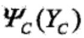的乘积形式，即</p>
<p style="text-align:center"></p>
<p style="text-indent: 2em;">其中，Z是规范化因子（normalization factor),由式</p>
<p style="text-align:center">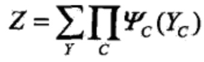</p>
<p style="text-indent: 2em;">给出。规范化因子保证构成一个概率分布。函数称为势函数(potential function)。这里要求势函数是严格正的，通常定义为指数函数：</p>
<p style="text-align:center">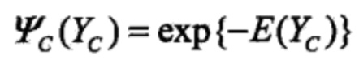</p>
<p style="text-indent: 2em;">概率无向图模型的因子分解由下述定理来保证。</p>
<p style="text-indent: 2em;">定理(<strong>Hammersley-Clifford定理</strong>）概率无向图模型的联合概率分布<span style="text-indent: 2em;">可以表示为如下形式：</span></p>
<p style="text-align:center"></p>
<p style="text-align:center"></p>
<p style="text-indent: 2em;">其中，C是无向图的最大团，是C的结点对应的随机变量，是C上定义的严格正函数，乘积是在无向图所有的最大团上进行的。</p>
<h2 id="h2-3">条件随机场的定义与形式</h2>
<h3 id="h3-4">条件随机场的定义</h3>
<p style="text-indent: 2em;">条件随机场（conditional random field)是给定随机变量X条件下，随机变量Y的马尔可夫随机场。这里主要介绍定义在线性链上的特殊的条件随机场，称为线性链条件随机场（linear chain conditional random field)。线性链条件随机场可以用于标注等问题。这时，在条件概率模型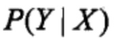中，Y是输出变量，表示标记序列，X是输入变量，表示需要标注的观测序列。也把标记序列称为状态序列（参见隐马尔可夫模型)。学习时，利用训练数据集通过极大似然估计或正则化的极大似然估计得到条件概率模型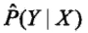；预测时，对于给定的输入序列x,求出条件概率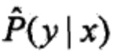最大的输出序列y。</p>
<p style="text-indent: 2em;">首先定义一般的条件随机场，然后定义线性链条件随机场。</p>
<p style="text-indent: 2em;">定义(<strong>条件随机场</strong>）设X与Y是随机变量，是在给定X的条件下Y的条件概率分布。若随机变量Y构成一个由无向图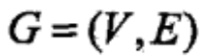表示的马尔可夫随机场，即</p>
<p style="text-align:center">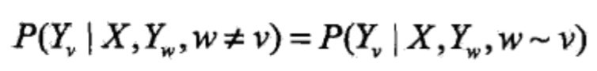</p>
<p style="text-indent: 2em;">对任意结点v成立，则称条件概率分布为条件随机场。式中w~v表示在图中与结点v有边连接的所有结点w,w≠v表示结点v以外的所有结点，，与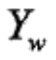为结点v，u与w对应的随机变量。从定义来看，左边到右边点的数量大大减小，<span style="text-indent: 32px;">w≠v的点有|V</span>|-1个，而<span style="text-indent: 32px;">w~v就少了。</span></p>
<p style="text-indent: 2em;">在定义中并没有要求X和Y具有相同的结构。现实中，一般假设X和Y有相同的图结构。本书主要考虑无向图为线性链的情况，即</p>
<p style="text-align:center">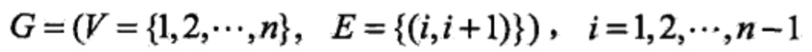</p>
<p style="text-indent: 2em;">在此情况下，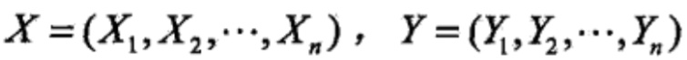,最大团是相邻两个结点的集合。线性链条件随机场有下面的定义。</p>
<p style="text-align:center"></p>
<p style="text-indent: 2em; text-align: center;">线性链条件随机场</p>
<p style="text-align:center"></p>
<p style="text-indent: 2em; text-align: center;">X和Y有相同的图结构的线性链条件随机场</p>
<p></p>
<p style="text-indent: 2em;">定义(<strong>线性链条件随机场)&nbsp;</strong>设均为线性链表示的随机变量序列，若在给定随机变量序列尤的条件下，随机变量序列Y的条件概率分布构成条件随机场，即满足马尔可夫性</p>
<p style="text-align:center">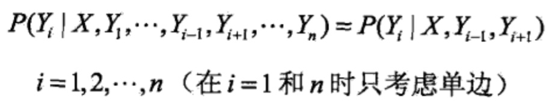</p>
<p style="text-indent: 2em;">则称为线性链条件随机场。在标注问题中，X表示输入观测序列，Y表示对应的输出标记序列或状态序列。</p>
<h3 id="h3-5"><span style="text-indent: 2em;">条件随机场的参数化形</span><span style="text-indent: 2em;">式</span></h3>
<p style="text-indent: 2em;">根据<span style="text-indent: 32px;">Hammersley-Clifford定理</span>,可以给出线性链条件随机场的因子分解式，各因子是定义在相邻两个结点上的函数。</p>
<p style="text-indent: 2em;">定理(<strong>线性链条件随机场的参数化形式</strong>）设为线性链条件随机场，则在随机变量X取值为x的条件下，随机变量Y取值为y的条件概率具有如下形式：</p>
<p style="text-align:center">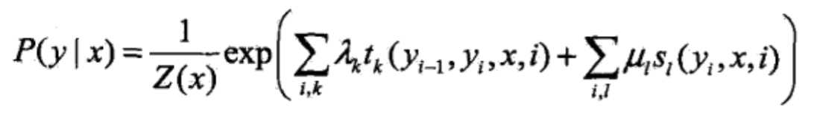</p>
<p style="text-indent: 2em;">其中，</p>
<p style="text-align:center">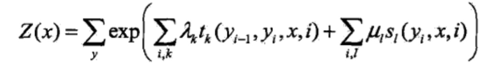</p>
<p style="text-indent: 2em;">式中，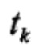和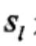是特征函数，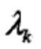和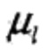是对应的权值。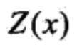是规范化因子，求和是在所有可能的输出序列上进行的。<span class="Apple-tab-span" style="white-space:pre"></span>(<span style="text-indent: 2em;">这里面的特征函数有些抽象，并且也不知道为什么有两项而且要加起来，ikl分别是什么？这些问题都不用急，下文会讲解。)</span></p>
<p style="text-indent: 2em;">上面两个式子是线性链条件随机场模型的基本形式，表示给定输入序列x,对输出序列y预测的条件概率。其中是定义在边上的特征函数，称为转移特征（t是transition的缩写，方便记忆），依赖于当前和前一个位置，是定义在结点上的特征函数，称为状态特征（s是status的缩写），依赖于当前位置（无论哪种特征函数，都将当前可能的y_i作为参数）。和都依赖于位置，是局部特征函数。通常，特征函数和取值为1或0;当满足特征条件时取值为1,否则为0。条件随机场完全由特征函数和对应的权值、确定。</p>
<p style="text-indent: 2em;">线性链条件随机场也是对数线性模型（loglinear model)。</p>
<h3 id="h3-6"><span style="text-indent: 2em;">条件随机场的简化形式</span></h3>
<p style="text-indent: 2em;">条件随机场还可以由简化形式表示。注意到条件随机场式中同一特征在各个位置都有定义，可以对同一个特征在各个位置求和，将局部特征函数转化为一个全局特征函数，这样就可以将条件随机场写成权值向量和特征向量的内积形式，即条件随机场的简化形式。</p>
<p style="text-indent: 2em;">为简便起见，首先将转移特征和状态特征及其权值用统一的符号表示。设有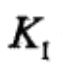个转移特征，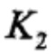个状态特征，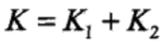,记</p>
<p style="text-align:center">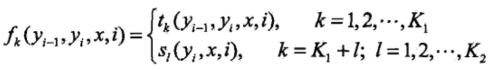</p>
<p style="text-indent: 2em;">上式其实是对特征函数进行编码，编号的前个属于转移特征，后个属于状态特征。编号统一了，后面就可以放到同一个矩阵里了。</p>
<p style="text-indent: 2em;">然后，对转移与状态特征在各个位置i求和，记作</p>
<p style="text-align:center">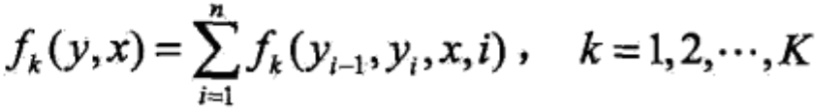</p>
<p style="text-indent: 2em;">上式的特征函数虽然都写成接受4个参数的形式，但对状态特征函数而言，y_i-1是会被忽略掉的。</p>
<p style="text-indent: 2em;">用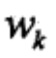表示特征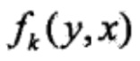的权值，即</p>
<p style="text-align:center">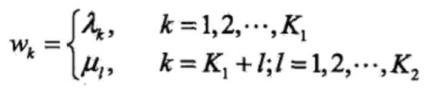</p>
<p style="text-indent: 2em;">于是，条件随机场可表示为</p>
<p style="text-align:center">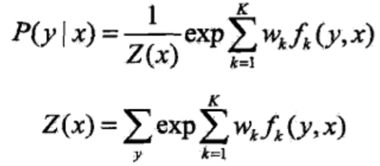</p>
<p style="text-indent: 2em;">若以w表示权值向量，即</p>
<p style="text-align:center">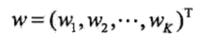</p>
<p style="text-indent: 2em;">以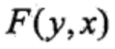表示全局特征向量，即</p>
<p style="text-align:center">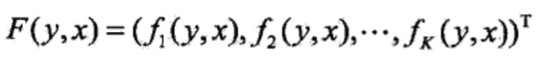</p>
<p style="text-indent: 2em;">则条件随机场可以写成向量w与的内积的形式:</p>
<p style="text-align:center"></p>
<p style="text-indent: 2em;">其中，</p>
<p style="text-align:center"></p>
<h3 id="h3-7">条件随机场的矩阵形式</h3>
<p style="text-indent: 2em;">条件随机场还可以由矩阵表示。假设是由内积形式给出的线性链条件随机场，表示对给定观测序列x，相应的标记序列y的条件概率。引进特殊的起点和终点状态标记,这时可以通过矩阵形式表示。</p>
<p style="text-indent: 2em;">对观测序列x的每一个位置i=1,2,…，n+1，定义一个m阶矩阵（m是标记y_i取值的个数，因为x是给定的，i-1位置和i位置各有m种可能，所以是m阶的）</p>
<p style="text-align:center"></p>
<p style="text-indent: 2em;">这样，给定观测序列x,标记序列y的非规范化概率可以通过n+1个矩阵的乘积表示，于是，条件概率是</p>
<p style="text-align:center"></p>
<p style="text-indent: 2em;">其中，为规范化因子，是n+1个矩阵的乘积的(start,stop)元素：</p>
<p style="text-align:center"></p>
<p style="text-indent: 2em;">注意，与表示开始状态与终止状态，规范化因子是以start为起点stop为终点通过状态的所有路径的非规范化概率之和。</p>
<p style="text-indent: 2em;">这里的M矩阵像极了一阶HMM中的转移概率矩阵，因为链式CRF中只有相邻两个节点间才有连接边。</p>
<h2 id="h2-8"><span style="text-indent: 2em;">条件随机场的概率计算问题</span></h2>
<p style="text-indent: 2em;">条件随机场的概率计算问题是给定条件随机场，输入序列x和输出序列y,计算条件概率以及相应的数学期望的问题。为了方便起见，像隐马尔可夫模型那样，引进前向-后向向量，递归地计算以上概率及期望值。这样的算法称为前向-后向算法。</p>
<h3 id="h3-9">前向-后向算法</h3>
<p style="text-indent: 2em;">对每个指标，定义前向向量：</p>
<p style="text-align:center"></p>
<p style="text-indent: 2em;">递推公式为</p>
<p style="text-align:center"></p>
<p style="text-indent: 2em;">又可表示为</p>
<p style="text-align:center"></p>
<p style="text-indent: 2em;">表示在位置i的标记是y_i并且到位置i的前部分标记序列的非规范化概率，y_i可取的值有m个，所以是m维列向量。</p>
<p style="text-indent: 2em;">同样，对每个指标，定义后向向量:</p>
<p style="text-align:center"></p>
<p style="text-indent: 2em;">又可以表示为：</p>
<p style="text-align:center"></p>
<p style="text-indent: 2em;">表示在位置i的标记为,并且从i+1到n的后部分标记序列的非规范化<span style="text-indent: 2em;">概率。</span></p>
<p style="text-indent: 2em;">由前向-后向向量定义不难得到：</p>
<p style="text-align:center"></p>
<p style="text-indent: 2em;">这里，是元素均为1的m维列向量。</p>
<h3 id="h3-10">概率计算</h3>
<p style="text-indent: 2em;">按照前向-后向向量的定义，很容易计算标记序列在位置i是标记的条件概率和在位置i-1与i是标记和的条件概率：</p>
<p style="text-align:center"></p>
<p style="text-indent: 2em;">其中，</p>
<p style="text-align:center"></p>
<h3 id="h3-11">期望值的计算</h3>
<p style="text-indent: 2em;">利用前向-后向向量，可以计算特征函数关于联合分布和条件分布的数学期望。</p>
<p style="text-indent: 2em;">特征函数关于条件分布的数学期望是</p>
<p style="text-align:center"></p>
<p style="text-indent: 2em;">其中，</p>
<p style="text-align:center"></p>
<p style="text-indent: 2em;">假设经验分布为，特征函数关于联合分布的数学期望是</p>
<p style="text-align:center"></p>
<p style="text-indent: 2em;">其中，</p>
<p style="text-align:center"></p>
<p style="text-indent: 2em;">这个式子是特征函数数学期望的一般计算公式。对于转移特征，可以将式中的换成;对于状态特征，可以将式中的换成,表示为。</p>
<p style="text-indent: 2em;">有了这些式子，对于给定的观测序列x与标记序列y，可以通过一次前向扫描计算及,通过一次后向扫描计算，从而计算所有的概率和特征的期望。</p>
<h2 id="h2-12">条件随机场的学习算法</h2>
<p style="text-indent: 2em;">本节讨论给定训练数据集估计条件随机场模型参数的问题，即条件随机场的学习问题。条件随机场模型实际上是定义在时序数据上的对数线形模型，其学习<span style="text-indent: 2em;">方法包括极大似然估计和正则化的极大似然估计。具体的优化实现算法有改进的迭代尺度法IIS、梯度下降法以及拟牛顿法。（其中，主流的CRF软件之CRF++采用了拟牛顿法+L-BFGS优化，所以着重看这种训练方法即可。）</span></p>
<h3 id="h3-13">改进的迭代尺度法</h3>
<p style="text-indent: 2em;">已知训练数据集，由此可知经验概率分布可以通过极大化训练数据的对数似然函数来求模型参数。</p>
<p style="text-indent: 2em;">训练数据的对数似然函数为</p>
<p style="text-align:center"></p>
<p style="text-indent: 2em;">当是一个由<span style="text-align: center;">和</span><span style="text-indent: 2em;">给出的条件随机场模型时，对数似然函数为</span></p>
<p style="text-align:center"></p>
<p style="text-indent: 2em;">改进的迭代尺度法通过迭代的方法不断优化对数似然函数改变量的下界，达到极大化对数似然函数的目的。假设模型的当前参数向量,向量的增量为,更新参数向量为。在每步迭代过程中，改进的迭代尺度法通过依次求解下面两个式子,得到，推导可参考<a href="http://www.hankcs.com/ml/the-logistic-regression-and-the-maximum-entropy-model.html#h3-16" target="_blank">《改进的迭代尺度法》</a>。</p>
<p style="text-indent: 2em;">关于转移特征的更新方程为</p>
<p style="text-align:center"></p>
<p style="text-indent: 2em;">关于状态特征的更新方程为</p>
<p style="text-align:center"></p>
<p style="text-indent: 2em;">这里，是在数据中出现所有特征数的总和:</p>
<p style="text-align:center"></p>
<p style="text-indent: 2em;">算法(<strong>条件随机场模型学习的改进的迭代尺度法</strong>）</p>
<p style="text-indent: 2em;">输入：特征函数;经验分布;</p>
<p style="text-indent: 2em;">输出：参数估计值模型。</p>
<p style="text-indent: 2em;">(1)<span class="Apple-tab-span" style="white-space:pre"></span>对所有，取初值</p>
<p style="text-indent: 2em;">(2)<span class="Apple-tab-span" style="white-space:pre"></span>对每一:</p>
<p style="text-indent: 2em;">(a)<span class="Apple-tab-span" style="white-space:pre"></span>当时，令是方程</p>
<p style="text-align:center"></p>
<p style="text-indent: 2em;">的解;</p>
<p style="text-indent: 2em;">当时，令是方程</p>
<p style="text-align:center"></p>
<p style="text-indent: 2em;">的解，式中由式给出。</p>
<p style="text-indent: 2em;">(b)<span class="Apple-tab-span" style="white-space:pre"></span>更新值：</p>
<p style="text-indent: 2em;">(3)<span class="Apple-tab-span" style="white-space:pre"></span>如果不是所有都收敛，重复步骤(2)。<span class="Apple-tab-span" style="white-space:pre"></span></p>
<p style="text-indent: 2em;">在和中，表示数据中的特征总数，对不同的<span style="text-indent: 2em;">数据</span><span style="text-indent: 2em;">取值可能不同。为了处理这个问题，定义松弛特征</span></p>
<p style="text-align:center"></p>
<p style="text-indent: 2em;">式中S是一个常数。选择足够大的常数S使得对训练数据集的所有数据,成立。这时特征总数可取S。</p>
<p style="text-indent: 2em;">由式,对于转移特征，的更新方程是</p>
<p style="text-align:center"></p>
<p style="text-indent: 2em;">其中，</p>
<p style="text-align:center"></p>
<p style="text-indent: 2em;">同样由式，对于状态特征，的更新方程是</p>
<p style="text-align:center"></p>
<p></p>
<p style="text-indent: 2em;">以上算法称为算法S。在算法S中需要使常数S取足够大，这样一来，每步迭代的增量向量会变大，算法收敛会变慢。算法T试图解决这个问题。算法T对每个观测序列x计算其特征总数最大值:</p>
<p style="text-align:center"></p>
<p style="text-indent: 2em;">利用前向-后向递推公式，可以很容易地计算。</p>
<p style="text-indent: 2em;">这时，关于转移特征参数的更新方程可以写成：</p>
<p style="text-align:center"></p>
<p style="text-indent: 2em;"><span style="text-indent: 32px;">这里，</span><span style="text-indent: 32px;">是特征</span><span style="text-indent: 32px;">的期望值，</span><span style="text-indent: 32px;">,</span><span style="text-indent: 32px;">是多项式方程唯一的实根</span>,可以用牛顿法求得。从而求得相关的。</p>
<p style="text-indent: 2em;">同样，关于状态特征的参数更新方程可以写成：</p>
<p style="text-align:center"></p>
<p style="text-indent: 2em;">这里，是特征的期望值，,是多项式方程唯一的实根,也可以用牛顿法求得。</p>
<h3 id="h3-14"><span style="text-indent: 2em;">拟牛顿法</span></h3>
<p style="text-indent: 2em;">条件随机场模型学习还可以应用牛顿法或拟牛顿法。对于条件随机场模型</p>
<p style="text-align:center"></p>
<p style="text-indent: 2em;">学习的优化目标函数是</p>
<p style="text-align:center"></p>
<p style="text-indent: 2em;"><span style="text-indent: 32px;">其梯度函数是</span></p>
<p style="text-align:center"><span style="text-indent: 32px;"></span></p>
<p style="text-indent: 2em;">拟牛顿法的<a href="http://www.hankcs.com/ml/l-bfgs.html" target="_blank">BFGS算法</a>如下。</p>
<p style="text-indent: 2em;">算法(条件随机场模型学习的BFGS算法）</p>
<p style="text-indent: 2em;">输入：特征函数；经验分布;</p>
<p style="text-indent: 2em;">输出：最优参数值；最优模型。</p>
<p style="text-indent: 2em;">(1)<span class="Apple-tab-span" style="white-space:pre"></span>选定初始点，取为正定对称矩阵，置</p>
<p style="text-indent: 2em;">(2) &nbsp; 计算。若,则停止计算；否则转(3)</p>
<p style="text-indent: 2em;">(3)<span class="Apple-tab-span" style="white-space:pre"></span>由求出</p>
<p style="text-indent: 2em;">(4)<span class="Apple-tab-span" style="white-space:pre"></span>一维搜索：求使得</p>
<p style="text-align:center"></p>
<p style="text-indent: 2em;">(5)<span class="Apple-tab-span" style="white-space:pre"></span>置</p>
<p style="text-indent: 2em;">(6)<span class="Apple-tab-span" style="white-space:pre"></span>计算，若=0,则停止计算；否则，按下式求出:</p>
<p style="text-align:center"></p>
<p style="text-indent: 2em;">其中，</p>
<p style="text-align:center"></p>
<p style="text-indent: 2em;">(7)<span class="Apple-tab-span" style="white-space:pre"></span>置，转(3)。</p>
<h2 id="h2-15">条件随机场的预测算法</h2>
<p style="text-indent: 2em;">条件随机场的预测问题是给定条件随机场和输入序列（观测序列）x,求条件概率最大的输出序列（标记序列），即对观测序列进行标注。条件随机场的预测算法是著名的维特比算法。</p>
<p style="text-indent: 2em;">由式可得：</p>
<p style="text-align:center"></p>
<p style="text-indent: 2em;">于是，条件随机场的预测问题成为求非规范化概率最大的最优路径问题</p>
<p style="text-align:center"></p>
<p style="text-indent: 2em;">这里，路径表示标记序列。其中，</p>
<p style="text-align:center"></p>
<p style="text-indent: 2em;">注意，这时只需计算非规范化概率，而不必计算概率，可以大大提高效率。为了求解最优路径，将写成如下形式：</p>
<p style="text-align:center"></p>
<p style="text-indent: 2em;">其中，</p>
<p style="text-align:center"></p>
<p style="text-indent: 2em;">是局部特征向量。</p>
<p style="text-indent: 2em;">下面叙述维特比算法。首先求出位置1的各个标记j=1,2,…，m的非规范化概率:</p>
<p style="text-align:center"></p>
<p style="text-indent: 2em;">一般地，由递推公式，求出到位置》。的各个标记/=l，2，。。。，m的非规范化概率的最大值，同时记录非规范化概率最大值的路径</p>
<p style="text-align:center"></p>
<p style="text-align:center"></p>
<p style="text-indent: 2em;">直到时终止。这时求得非规范化概率的最大值为</p>
<p style="text-align:center"></p>
<p style="text-indent: 2em;">及最优路径的终点</p>
<p style="text-align:center"></p>
<p style="text-indent: 2em;">由此最优路径终点返回,</p>
<p style="text-align:center"></p>
<p style="text-indent: 2em;">求得最优路径。</p>
<p style="text-indent: 2em;">综上所述，得到条件随机场预测的维特比算法：</p>
<p style="text-indent: 2em;">算法(条件随机场预测的维特比算法）</p>
<p style="text-indent: 2em;">输入：模型特征向量和权值向量,观测序列</p>
<p style="text-indent: 2em;">输出：最优路径。</p>
<p style="text-indent: 2em;">(1)<span class="Apple-tab-span" style="white-space:pre"></span>初始化</p>
<p style="text-align:center"></p>
<p style="text-indent: 2em;">(2)<span class="Apple-tab-span" style="white-space:pre"></span>递推。对</p>
<p style="text-align:center"></p>
<p style="text-indent: 2em;">(3)<span class="Apple-tab-span" style="white-space:pre"></span>终止</p>
<p style="text-align:center"></p>
<p style="text-indent: 2em;">(4)<span class="Apple-tab-span" style="white-space:pre"></span>返回路径</p>
<p style="text-align:center"></p>
<p style="text-indent: 2em;">求得最优路径。</p>
<h2 id="h2-16">CRF实现</h2>
<p style="text-indent: 2em;">关于具体的实现，这次发现CRF++与《方法》的契合度非常之高，所以请直接参考<a href="http://www.hankcs.com/ml/crf-code-analysis.html" target="_blank" style="text-indent: 32px; white-space: normal;">《CRF++代码分析》</a>。</p>
<p style="text-indent: 2em;">目前Python阵营里并没有简单好懂的实现，反而不如直接切入CRF++的生产代码有效果，还可以顺便学到不少C++的小知识。</p>
<h2 id="h2-17">Reference</h2>
<p style="text-indent: 2em;">《统计学习方法》</p>
<p style="text-indent: 2em;"><a href="http://mi.eng.cam.ac.uk/~cz277/doc/Slides-CRFASR-CSLT.pdf" _src="http://mi.eng.cam.ac.uk/~cz277/doc/Slides-CRFASR-CSLT.pdf" target="_blank" rel="external nofollow" style="text-indent: 32px; white-space: normal;">http://mi.eng.cam.ac.uk/~cz277/doc/Slides-CRFASR-CSLT.pdf</a></p>
<p class="post-copyright"><a href="http://www.hankcs.com/license/" target="_blank"></a>&nbsp;<a href="http://www.hankcs.com/license/" target="_blank" textvalue="知识共享署名-非商业性使用-相同方式共享">知识共享署名-非商业性使用-相同方式共享</a>：<a href="http://www.hankcs.com/">码农场</a> » <a href="http://www.hankcs.com/ml/conditional-random-field.html">条件随机场</a></p>		</article>
								<div class="action-share bdsharebuttonbox bdshare-button-style0-24" data-bd-bind="1499055369907">
			<span>分享到：</span><a class="bds_qzone" data-cmd="qzone" title="分享到QQ空间"></a><a class="bds_tsina" data-cmd="tsina" title="分享到新浪微博"></a><a class="bds_weixin" data-cmd="weixin" title="分享到微信"></a><a class="bds_tqq" data-cmd="tqq" title="分享到腾讯微博"></a><a class="bds_sqq" data-cmd="sqq" title="分享到QQ好友"></a><a class="bds_bdhome" data-cmd="bdhome" title="分享到百度新首页"></a><a class="bds_tqf" data-cmd="tqf" title="分享到腾讯朋友"></a><a class="bds_renren" data-cmd="renren" title="分享到人人网"></a><a class="bds_diandian" data-cmd="diandian" title="分享到点点网"></a><a class="bds_youdao" data-cmd="youdao" title="分享到有道云笔记"></a><a class="bds_ty" data-cmd="ty" title="分享到天涯社区"></a><a class="bds_kaixin001" data-cmd="kaixin001" title="分享到开心网"></a><a class="bds_taobao" data-cmd="taobao"></a><a class="bds_douban" data-cmd="douban" title="分享到豆瓣网"></a><a class="bds_fbook" data-cmd="fbook" title="分享到Facebook"></a><a class="bds_twi" data-cmd="twi" title="分享到Twitter"></a><a class="bds_mail" data-cmd="mail" title="分享到邮件分享"></a><a class="bds_copy" data-cmd="copy" title="分享到复制网址"></a><a class="bds_more" data-cmd="more">更多</a> <span>(</span><a class="bds_count" data-cmd="count"></a><span>)</span>		</div>
		<div class="article-tags">继续浏览有关 <a href="http://www.hankcs.com/ml/"><i class="fa fa-folder-open"></i> 机器学习</a><a href="http://www.hankcs.com/tag/crf/" rel="tag">CRF</a><a href="http://www.hankcs.com/tag/%e3%80%8a%e7%bb%9f%e8%ae%a1%e5%ad%a6%e4%b9%a0%e6%96%b9%e6%b3%95%e3%80%8b/" rel="tag">《统计学习方法》</a><a href="http://www.hankcs.com/tag/%e7%bb%b4%e7%89%b9%e6%af%94%e7%ae%97%e6%b3%95/" rel="tag">维特比算法</a> 的文章</div>		<div class="asb asb-post asb-post-02"><script async="" src="./conditional-random-field_files/adsbygoogle.js.下载"></script>
<!-- 文章页正文下 页首横幅 -->
<ins class="adsbygoogle" style="display:inline-block;width:728px;height:90px" data-ad-client="ca-pub-1152644711996772" data-ad-slot="2657945648" data-adsbygoogle-status="done"><ins id="aswift_1_expand" style="display:inline-table;border:none;height:90px;margin:0;padding:0;position:relative;visibility:visible;width:728px;background-color:transparent"><ins id="aswift_1_anchor" style="display:block;border:none;height:90px;margin:0;padding:0;position:relative;visibility:visible;width:728px;background-color:transparent"><iframe width="728" height="90" frameborder="0" marginwidth="0" marginheight="0" vspace="0" hspace="0" allowtransparency="true" scrolling="no" allowfullscreen="true" onload="var i=this.id,s=window.google_iframe_oncopy,H=s&amp;&amp;s.handlers,h=H&amp;&amp;H[i],w=this.contentWindow,d;try{d=w.document}catch(e){}if(h&amp;&amp;d&amp;&amp;(!d.body||!d.body.firstChild)){if(h.call){setTimeout(h,0)}else if(h.match){try{h=s.upd(h,i)}catch(e){}w.location.replace(h)}}" id="aswift_1" name="aswift_1" style="left:0;position:absolute;top:0;width:728px;height:90px;" src="./conditional-random-field_files/saved_resource(1).html"></iframe></ins></ins></ins>
<script>
(adsbygoogle = window.adsbygoogle || []).push({});
</script></div>		<nav class="article-nav">
			<span class="article-nav-prev">上一篇 <a href="http://www.hankcs.com/ml/computing-log-sum-exp.html" rel="prev">计算指数函数的和的对数</a></span>
			<span class="article-nav-next"><a href="http://www.hankcs.com/ml/crf-code-analysis.html" rel="next">CRF++代码分析</a> 下一篇</span>
		</nav>
				<div class="asb asb-post asb-post-03"><script async="" src="./conditional-random-field_files/adsbygoogle.js.下载"></script>
<!-- 匹配内容 -->
<ins class="adsbygoogle" style="display: block; height: 466px;" data-ad-client="ca-pub-1152644711996772" data-ad-slot="7343699642" data-ad-format="autorelaxed" data-adsbygoogle-status="done"><ins id="aswift_2_expand" style="display:inline-table;border:none;height:466px;margin:0;padding:0;position:relative;visibility:visible;width:778px;background-color:transparent"><ins id="aswift_2_anchor" style="display:block;border:none;height:466px;margin:0;padding:0;position:relative;visibility:visible;width:778px;background-color:transparent"><iframe width="778" height="466" frameborder="0" marginwidth="0" marginheight="0" vspace="0" hspace="0" allowtransparency="true" scrolling="no" allowfullscreen="true" onload="var i=this.id,s=window.google_iframe_oncopy,H=s&amp;&amp;s.handlers,h=H&amp;&amp;H[i],w=this.contentWindow,d;try{d=w.document}catch(e){}if(h&amp;&amp;d&amp;&amp;(!d.body||!d.body.firstChild)){if(h.call){setTimeout(h,0)}else if(h.match){try{h=s.upd(h,i)}catch(e){}w.location.replace(h)}}" id="aswift_2" name="aswift_2" style="left:0;position:absolute;top:0;width:778px;height:466px;" src="./conditional-random-field_files/saved_resource(2).html"></iframe></ins></ins></ins>
<script>
(adsbygoogle = window.adsbygoogle || []).push({});
</script></div>		<div class="title" id="comments">
	<h3>评论 <small>欢迎留言</small></h3>
</div>
<div id="respond" class="no_webshot">
		
	<form action="http://www.hankcs.com/wp-comments-post.php" method="post" id="commentform">
		<div class="comt">
			<div class="comt-title">
								<p><a id="cancel-comment-reply-link" href="javascript:;">取消</a></p>
			</div>
			<div class="comt-box">
				<textarea placeholder="此处不受理任何开源项目问题，请在GitHub上发issue ，大家一起讨论，谢谢。" class="input-block-level comt-area" name="comment" id="comment" cols="100%" rows="3" tabindex="1" onkeydown="if(event.ctrlKey&amp;&amp;event.keyCode==13){document.getElementById(&#39;submit&#39;).click();return false};"></textarea>
				<div class="comt-ctrl">
					<div class="comt-tips"><input type="hidden" name="comment_post_ID" value="7786" id="comment_post_ID">
<input type="hidden" name="comment_parent" id="comment_parent" value="0">
<p style="display: none;"><input type="hidden" id="akismet_comment_nonce" name="akismet_comment_nonce" value="0de722abaf"></p><label for="comment_mail_notify" class="checkbox inline hide" style="padding-top:0"><input type="checkbox" name="comment_mail_notify" id="comment_mail_notify" value="comment_mail_notify" checked="checked">有人回复时邮件通知我</label><p style="display: none;"></p><div class="comt-tip comt-loading" style="display: none;">评论提交中...</div><div class="comt-tip comt-error" style="display: none;">#</div></div>
					<button type="submit" name="submit" id="submit" tabindex="5">提交评论</button>
					<!-- <span data-type="comment-insert-smilie" class="muted comt-smilie"><i class="icon-thumbs-up icon12"></i> 表情</span> -->
				</div>
			</div>

												<div class="comt-comterinfo" id="comment-author-info">
						<ul>
							<li class="form-inline"><label class="hide" for="author">昵称</label><input class="ipt" type="text" name="author" id="author" value="" tabindex="2" placeholder="昵称"><span class="text-muted">昵称 (必填)</span></li>
							<li class="form-inline"><label class="hide" for="email">邮箱</label><input class="ipt" type="text" name="email" id="email" value="" tabindex="3" placeholder="邮箱"><span class="text-muted">邮箱 (必填)</span></li>
							<li class="form-inline"><label class="hide" for="url">网址</label><input class="ipt" type="text" name="url" id="url" value="" tabindex="4" placeholder="网址"><span class="text-muted">网址</span></li>
						</ul>
					</div>
									</div>

	<input type="hidden" id="ak_js" name="ak_js" value="1499055369512"></form>
	</div>
	</div>
	</div>
	<aside class="sidebar">
<div class="widget widget_categories affix-top" style="top: 0px;"><h3>栏目分类</h3><label class="screen-reader-text" for="cat">栏目分类</label><select name="cat" id="cat" class="postform">
	<option value="-1">选择分类目录</option>
	<option class="level-0" value="18">ACG&nbsp;&nbsp;(7)</option>
	<option class="level-1" value="117">&nbsp;&nbsp;&nbsp;游戏&nbsp;&nbsp;(5)</option>
	<option class="level-0" value="7">Web开发&nbsp;&nbsp;(80)</option>
	<option class="level-1" value="64">&nbsp;&nbsp;&nbsp;BAE&nbsp;&nbsp;(13)</option>
	<option class="level-1" value="11">&nbsp;&nbsp;&nbsp;Linux相关&nbsp;&nbsp;(9)</option>
	<option class="level-1" value="54">&nbsp;&nbsp;&nbsp;Mac OS&nbsp;&nbsp;(1)</option>
	<option class="level-1" value="27">&nbsp;&nbsp;&nbsp;WordPress&nbsp;&nbsp;(8)</option>
	<option class="level-1" value="65">&nbsp;&nbsp;&nbsp;Yii&nbsp;&nbsp;(17)</option>
	<option class="level-1" value="2">&nbsp;&nbsp;&nbsp;主机域名&nbsp;&nbsp;(26)</option>
	<option class="level-1" value="66">&nbsp;&nbsp;&nbsp;数据库&nbsp;&nbsp;(4)</option>
	<option class="level-0" value="140">信息安全&nbsp;&nbsp;(3)</option>
	<option class="level-0" value="1">其他类别&nbsp;&nbsp;(184)</option>
	<option class="level-1" value="78">&nbsp;&nbsp;&nbsp;心情&nbsp;&nbsp;(1)</option>
	<option class="level-1" value="15">&nbsp;&nbsp;&nbsp;旧的博文&nbsp;&nbsp;(170)</option>
	<option class="level-0" value="87">操作系统&nbsp;&nbsp;(3)</option>
	<option class="level-1" value="88">&nbsp;&nbsp;&nbsp;Windows&nbsp;&nbsp;(2)</option>
	<option class="level-0" value="81">数学基礎&nbsp;&nbsp;(3)</option>
	<option class="level-0" value="4">日语教程&nbsp;&nbsp;(120)</option>
	<option class="level-1" value="96">&nbsp;&nbsp;&nbsp;口译&nbsp;&nbsp;(1)</option>
	<option class="level-1" value="59">&nbsp;&nbsp;&nbsp;新编日语商务贸易会话&nbsp;&nbsp;(14)</option>
	<option class="level-1" value="19">&nbsp;&nbsp;&nbsp;新编日语阅读文选&nbsp;&nbsp;(34)</option>
	<option class="level-2" value="44">&nbsp;&nbsp;&nbsp;&nbsp;&nbsp;&nbsp;第一册&nbsp;&nbsp;(20)</option>
	<option class="level-2" value="61">&nbsp;&nbsp;&nbsp;&nbsp;&nbsp;&nbsp;第三册&nbsp;&nbsp;(2)</option>
	<option class="level-2" value="20">&nbsp;&nbsp;&nbsp;&nbsp;&nbsp;&nbsp;第二册&nbsp;&nbsp;(10)</option>
	<option class="level-1" value="46">&nbsp;&nbsp;&nbsp;日语入门&nbsp;&nbsp;(2)</option>
	<option class="level-1" value="62">&nbsp;&nbsp;&nbsp;日语听力&nbsp;&nbsp;(2)</option>
	<option class="level-1" value="5">&nbsp;&nbsp;&nbsp;日语综合教程&nbsp;&nbsp;(64)</option>
	<option class="level-2" value="120">&nbsp;&nbsp;&nbsp;&nbsp;&nbsp;&nbsp;第七册&nbsp;&nbsp;(14)</option>
	<option class="level-2" value="50">&nbsp;&nbsp;&nbsp;&nbsp;&nbsp;&nbsp;第三册&nbsp;&nbsp;(7)</option>
	<option class="level-2" value="73">&nbsp;&nbsp;&nbsp;&nbsp;&nbsp;&nbsp;第五册&nbsp;&nbsp;(12)</option>
	<option class="level-2" value="98">&nbsp;&nbsp;&nbsp;&nbsp;&nbsp;&nbsp;第六册&nbsp;&nbsp;(18)</option>
	<option class="level-2" value="6">&nbsp;&nbsp;&nbsp;&nbsp;&nbsp;&nbsp;第四册&nbsp;&nbsp;(12)</option>
	<option class="level-1" value="86">&nbsp;&nbsp;&nbsp;月の珊瑚&nbsp;&nbsp;(3)</option>
	<option class="level-0" value="131">机器学习&nbsp;&nbsp;(57)</option>
	<option class="level-0" value="16">经济人文&nbsp;&nbsp;(19)</option>
	<option class="level-1" value="17">&nbsp;&nbsp;&nbsp;国际贸易理论与政策&nbsp;&nbsp;(9)</option>
	<option class="level-1" value="30">&nbsp;&nbsp;&nbsp;当代世界经济与政治&nbsp;&nbsp;(3)</option>
	<option class="level-0" value="9">编程开发&nbsp;&nbsp;(556)</option>
	<option class="level-1" value="8">&nbsp;&nbsp;&nbsp;Android&nbsp;&nbsp;(30)</option>
	<option class="level-1" value="13">&nbsp;&nbsp;&nbsp;C++&nbsp;&nbsp;(237)</option>
	<option class="level-1" value="25">&nbsp;&nbsp;&nbsp;Drupal&nbsp;&nbsp;(23)</option>
	<option class="level-1" value="10">&nbsp;&nbsp;&nbsp;Java&nbsp;&nbsp;(69)</option>
	<option class="level-1" value="123">&nbsp;&nbsp;&nbsp;Javascript&nbsp;&nbsp;(1)</option>
	<option class="level-1" value="24">&nbsp;&nbsp;&nbsp;PHP&nbsp;&nbsp;(57)</option>
	<option class="level-1" value="94">&nbsp;&nbsp;&nbsp;Python&nbsp;&nbsp;(8)</option>
	<option class="level-1" value="14">&nbsp;&nbsp;&nbsp;汇编逆向&nbsp;&nbsp;(12)</option>
	<option class="level-1" value="70">&nbsp;&nbsp;&nbsp;算法&nbsp;&nbsp;(235)</option>
	<option class="level-1" value="121">&nbsp;&nbsp;&nbsp;网络&nbsp;&nbsp;(6)</option>
	<option class="level-0" value="104">自然语言处理&nbsp;&nbsp;(77)</option>
	<option class="level-1" value="109">&nbsp;&nbsp;&nbsp;中文分词&nbsp;&nbsp;(10)</option>
	<option class="level-1" value="128">&nbsp;&nbsp;&nbsp;句法分析&nbsp;&nbsp;(6)</option>
	<option class="level-1" value="127">&nbsp;&nbsp;&nbsp;命名实体识别&nbsp;&nbsp;(6)</option>
	<option class="level-1" value="105">&nbsp;&nbsp;&nbsp;语料库&nbsp;&nbsp;(4)</option>
	<option class="level-0" value="12">软件发布&nbsp;&nbsp;(9)</option>
</select>

<script type="text/javascript">
/* <![CDATA[ */
(function() {
	var dropdown = document.getElementById( "cat" );
	function onCatChange() {
		if ( dropdown.options[ dropdown.selectedIndex ].value > 0 ) {
			location.href = "http://www.hankcs.com/?cat=" + dropdown.options[ dropdown.selectedIndex ].value;
		}
	}
	dropdown.onchange = onCatChange;
})();
/* ]]> */
</script>

</div><div class="widget widget_archive" style="top: 0px;"><h3>文章归档</h3>		<label class="screen-reader-text" for="archives-dropdown-5">文章归档</label>
		<select id="archives-dropdown-5" name="archive-dropdown" onchange="document.location.href=this.options[this.selectedIndex].value;">
			
			<option value="">选择月份</option>
				<option value="http://www.hankcs.com/2017/07/"> 2017年七月 &nbsp;(1)</option>
	<option value="http://www.hankcs.com/2017/06/"> 2017年六月 &nbsp;(28)</option>
	<option value="http://www.hankcs.com/2017/05/"> 2017年五月 &nbsp;(8)</option>
	<option value="http://www.hankcs.com/2017/03/"> 2017年三月 &nbsp;(12)</option>
	<option value="http://www.hankcs.com/2017/02/"> 2017年二月 &nbsp;(13)</option>
	<option value="http://www.hankcs.com/2017/01/"> 2017年一月 &nbsp;(22)</option>
	<option value="http://www.hankcs.com/2016/12/"> 2016年十二月 &nbsp;(2)</option>
	<option value="http://www.hankcs.com/2016/11/"> 2016年十一月 &nbsp;(15)</option>
	<option value="http://www.hankcs.com/2016/10/"> 2016年十月 &nbsp;(3)</option>
	<option value="http://www.hankcs.com/2016/09/"> 2016年九月 &nbsp;(3)</option>
	<option value="http://www.hankcs.com/2016/08/"> 2016年八月 &nbsp;(7)</option>
	<option value="http://www.hankcs.com/2016/07/"> 2016年七月 &nbsp;(1)</option>
	<option value="http://www.hankcs.com/2016/06/"> 2016年六月 &nbsp;(1)</option>
	<option value="http://www.hankcs.com/2016/05/"> 2016年五月 &nbsp;(3)</option>
	<option value="http://www.hankcs.com/2016/04/"> 2016年四月 &nbsp;(2)</option>
	<option value="http://www.hankcs.com/2016/03/"> 2016年三月 &nbsp;(3)</option>
	<option value="http://www.hankcs.com/2016/02/"> 2016年二月 &nbsp;(3)</option>
	<option value="http://www.hankcs.com/2015/12/"> 2015年十二月 &nbsp;(3)</option>
	<option value="http://www.hankcs.com/2015/11/"> 2015年十一月 &nbsp;(6)</option>
	<option value="http://www.hankcs.com/2015/10/"> 2015年十月 &nbsp;(4)</option>
	<option value="http://www.hankcs.com/2015/09/"> 2015年九月 &nbsp;(4)</option>
	<option value="http://www.hankcs.com/2015/08/"> 2015年八月 &nbsp;(2)</option>
	<option value="http://www.hankcs.com/2015/07/"> 2015年七月 &nbsp;(6)</option>
	<option value="http://www.hankcs.com/2015/05/"> 2015年五月 &nbsp;(3)</option>
	<option value="http://www.hankcs.com/2015/04/"> 2015年四月 &nbsp;(5)</option>
	<option value="http://www.hankcs.com/2015/03/"> 2015年三月 &nbsp;(3)</option>
	<option value="http://www.hankcs.com/2015/02/"> 2015年二月 &nbsp;(22)</option>
	<option value="http://www.hankcs.com/2015/01/"> 2015年一月 &nbsp;(14)</option>
	<option value="http://www.hankcs.com/2014/12/"> 2014年十二月 &nbsp;(10)</option>
	<option value="http://www.hankcs.com/2014/11/"> 2014年十一月 &nbsp;(21)</option>
	<option value="http://www.hankcs.com/2014/10/"> 2014年十月 &nbsp;(14)</option>
	<option value="http://www.hankcs.com/2014/09/"> 2014年九月 &nbsp;(16)</option>
	<option value="http://www.hankcs.com/2014/08/"> 2014年八月 &nbsp;(11)</option>
	<option value="http://www.hankcs.com/2014/07/"> 2014年七月 &nbsp;(6)</option>
	<option value="http://www.hankcs.com/2014/06/"> 2014年六月 &nbsp;(13)</option>
	<option value="http://www.hankcs.com/2014/05/"> 2014年五月 &nbsp;(28)</option>
	<option value="http://www.hankcs.com/2014/04/"> 2014年四月 &nbsp;(41)</option>
	<option value="http://www.hankcs.com/2014/03/"> 2014年三月 &nbsp;(26)</option>
	<option value="http://www.hankcs.com/2014/02/"> 2014年二月 &nbsp;(52)</option>
	<option value="http://www.hankcs.com/2014/01/"> 2014年一月 &nbsp;(28)</option>
	<option value="http://www.hankcs.com/2013/12/"> 2013年十二月 &nbsp;(29)</option>
	<option value="http://www.hankcs.com/2013/11/"> 2013年十一月 &nbsp;(21)</option>
	<option value="http://www.hankcs.com/2013/10/"> 2013年十月 &nbsp;(11)</option>
	<option value="http://www.hankcs.com/2013/09/"> 2013年九月 &nbsp;(19)</option>
	<option value="http://www.hankcs.com/2013/08/"> 2013年八月 &nbsp;(22)</option>
	<option value="http://www.hankcs.com/2013/07/"> 2013年七月 &nbsp;(36)</option>
	<option value="http://www.hankcs.com/2013/06/"> 2013年六月 &nbsp;(24)</option>
	<option value="http://www.hankcs.com/2013/05/"> 2013年五月 &nbsp;(36)</option>
	<option value="http://www.hankcs.com/2013/04/"> 2013年四月 &nbsp;(29)</option>
	<option value="http://www.hankcs.com/2013/03/"> 2013年三月 &nbsp;(46)</option>
	<option value="http://www.hankcs.com/2013/02/"> 2013年二月 &nbsp;(5)</option>
	<option value="http://www.hankcs.com/2012/05/"> 2012年五月 &nbsp;(2)</option>
	<option value="http://www.hankcs.com/2012/04/"> 2012年四月 &nbsp;(6)</option>
	<option value="http://www.hankcs.com/2010/12/"> 2010年十二月 &nbsp;(5)</option>
	<option value="http://www.hankcs.com/2010/11/"> 2010年十一月 &nbsp;(10)</option>
	<option value="http://www.hankcs.com/2010/10/"> 2010年十月 &nbsp;(13)</option>
	<option value="http://www.hankcs.com/2010/09/"> 2010年九月 &nbsp;(6)</option>
	<option value="http://www.hankcs.com/2010/08/"> 2010年八月 &nbsp;(5)</option>
	<option value="http://www.hankcs.com/2010/07/"> 2010年七月 &nbsp;(3)</option>
	<option value="http://www.hankcs.com/2010/06/"> 2010年六月 &nbsp;(12)</option>
	<option value="http://www.hankcs.com/2010/05/"> 2010年五月 &nbsp;(14)</option>
	<option value="http://www.hankcs.com/2010/04/"> 2010年四月 &nbsp;(8)</option>
	<option value="http://www.hankcs.com/2010/03/"> 2010年三月 &nbsp;(16)</option>
	<option value="http://www.hankcs.com/2010/01/"> 2010年一月 &nbsp;(16)</option>
	<option value="http://www.hankcs.com/2009/12/"> 2009年十二月 &nbsp;(33)</option>
	<option value="http://www.hankcs.com/2009/11/"> 2009年十一月 &nbsp;(26)</option>
	<option value="http://www.hankcs.com/2009/09/"> 2009年九月 &nbsp;(2)</option>

		</select>
		</div><div class="widget widget_ui_posts"><h3>热门文章</h3><ul>		<li><a target="_blank" href="http://www.hankcs.com/ml/machine-learning-entry-list.html"><span class="thumbnail"></span><span class="text">机器学习入门书单</span><span class="muted">2015-02-04</span><span class="muted">评论(26)</span></a></li>
		<li><a target="_blank" href="http://www.hankcs.com/ml/back-propagation-neural-network.html"><span class="thumbnail"></span><span class="text">反向传播神经网络极简入门</span><span class="muted">2015-11-08</span><span class="muted">评论(25)</span></a></li>
		<li><a target="_blank" href="http://www.hankcs.com/ml/k-nearest-neighbor-method.html"><span class="thumbnail"></span><span class="text">k近邻法</span><span class="muted">2015-02-06</span><span class="muted">评论(11)</span></a></li>
		<li><a target="_blank" href="http://www.hankcs.com/ml/em-algorithm-and-its-generalization.html"><span class="thumbnail"></span><span class="text">EM算法及其推广</span><span class="muted">2016-05-30</span><span class="muted">评论(8)</span></a></li>
		<li><a target="_blank" href="http://www.hankcs.com/ml/understanding-the-convolution-in-deep-learning.html"><span class="thumbnail"></span><span class="text">理解深度学习中的卷积</span><span class="muted">2017-03-24</span><span class="muted">评论(8)</span></a></li>
		<li><a target="_blank" href="http://www.hankcs.com/ml/naive-bayesian-method.html"><span class="thumbnail"></span><span class="text">朴素贝叶斯法</span><span class="muted">2015-02-09</span><span class="muted">评论(8)</span></a></li>
</ul></div><div class="widget widget_ui_posts" style="top: 0px;"><h3>最新文章</h3><ul>		<li><a target="_blank" href="http://www.hankcs.com/ml/compile-and-install-tensorflow-from-source.html"><span class="thumbnail"></span><span class="text">从源码编译安装TensorFlow</span><span class="muted">2017-06-26</span><span class="muted">评论(0)</span></a></li>
		<li><a target="_blank" href="http://www.hankcs.com/ml/hinton-recent-applications-of-deep-neural-nets.html"><span class="thumbnail"></span><span class="text">Hinton神经网络公开课16 Recent applications of deep neural nets</span><span class="muted">2017-06-05</span><span class="muted">评论(0)</span></a></li>
		<li><a target="_blank" href="http://www.hankcs.com/ml/hinton-modeling-hierarchical-structure-with-neural-nets.html"><span class="thumbnail"></span><span class="text">Hinton神经网络公开课15 Modeling hierarchical structure with neural nets</span><span class="muted">2017-06-04</span><span class="muted">评论(0)</span></a></li>
		<li><a target="_blank" href="http://www.hankcs.com/ml/nnml-rbm.html"><span class="thumbnail"></span><span class="text">Hinton神经网络公开课编程练习4 Restricted Boltzmann Machines</span><span class="muted">2017-06-03</span><span class="muted">评论(0)</span></a></li>
		<li><a target="_blank" href="http://www.hankcs.com/ml/hinton-deep-neural-nets-with-generative-pre-training.html"><span class="thumbnail"></span><span class="text">Hinton神经网络公开课14 Deep neural nets with generative pre-training</span><span class="muted">2017-06-02</span><span class="muted">评论(0)</span></a></li>
		<li><a target="_blank" href="http://www.hankcs.com/ml/hinton-stacking-rbms-to-make-deep-belief-nets.html"><span class="thumbnail"></span><span class="text">Hinton神经网络公开课13 Stacking RBMs to make Deep Belief Nets</span><span class="muted">2017-05-31</span><span class="muted">评论(0)</span></a></li>
</ul></div><div class="widget widget_text"><h3>订阅关注</h3>			<div class="textwidget"><iframe width="100%" height="400" class="share_self" frameborder="0" scrolling="no" src="./conditional-random-field_files/index.html"></iframe></div>
		</div><div class="widget widget_ui_tags" style="top: 0px;"><h3>热门标签</h3><div class="d_tags"><a href="http://www.hankcs.com/tag/%e3%80%8a%e6%8c%91%e6%88%98%e7%a8%8b%e5%ba%8f%e8%ae%be%e8%ae%a1%e7%ab%9e%e8%b5%9b%e7%ac%ac2%e7%89%88%e3%80%8b/">《挑战程序设计竞赛(第2版)》 (184)</a><a href="http://www.hankcs.com/tag/%e3%80%8a%e6%97%a5%e8%af%ad%e7%bb%bc%e5%90%88%e6%95%99%e7%a8%8b%e3%80%8b/">《日语综合教程》 (57)</a><a href="http://www.hankcs.com/tag/%e3%80%8a%e6%96%b0%e7%bc%96%e6%97%a5%e8%af%ad%e9%98%85%e8%af%bb%e6%96%87%e9%80%89%e3%80%8b/">《新编日语阅读文选》 (34)</a><a href="http://www.hankcs.com/tag/cs224n/">CS224n (23)</a><a href="http://www.hankcs.com/tag/%e3%80%8a%e6%99%ba%e8%83%bdweb%e7%ae%97%e6%b3%95%e3%80%8b/">《智能Web算法》 (20)</a><a href="http://www.hankcs.com/tag/neural-networks-for-machine-learning/">Neural Networks for Machine Learning (19)</a><a href="http://www.hankcs.com/tag/%e4%b8%ad%e6%96%87%e5%88%86%e8%af%8d/">中文分词 (18)</a><a href="http://www.hankcs.com/tag/wordpress/">WordPress (17)</a><a href="http://www.hankcs.com/tag/%e6%b7%b1%e5%ba%a6%e5%ad%a6%e4%b9%a0/">深度学习 (16)</a><a href="http://www.hankcs.com/tag/lucene/">Lucene (15)</a><a href="http://www.hankcs.com/tag/%e7%bb%b4%e7%89%b9%e6%af%94%e7%ae%97%e6%b3%95/">维特比算法 (15)</a><a href="http://www.hankcs.com/tag/%e6%96%b0%e7%bc%96%e6%97%a5%e8%af%ad%e5%95%86%e5%8a%a1%e8%b4%b8%e6%98%93%e4%bc%9a%e8%af%9d/">新编日语商务贸易会话 (14)</a><a href="http://www.hankcs.com/tag/intellij-idea/">IntelliJ IDEA (13)</a><a href="http://www.hankcs.com/tag/%e3%80%8a%e7%bb%9f%e8%ae%a1%e5%ad%a6%e4%b9%a0%e6%96%b9%e6%b3%95%e3%80%8b/">《统计学习方法》 (12)</a><a href="http://www.hankcs.com/tag/uva/">UVa (11)</a><a href="http://www.hankcs.com/tag/drupal7%e4%b8%93%e4%b8%9a%e5%bc%80%e5%8f%91%e6%8c%87%e5%8d%97-%e7%ac%ac%e4%b8%89%e7%89%88/">Drupal7专业开发指南 第三版 (10)</a><a href="http://www.hankcs.com/tag/%e3%80%8a%e6%8c%91%e6%88%98%e7%bc%96%e7%a8%8b-%e7%a8%8b%e5%ba%8f%e8%ae%be%e8%ae%a1%e7%ab%9e%e8%b5%9b%e8%ae%ad%e7%bb%83%e6%89%8b%e5%86%8c%e3%80%8b/">《挑战编程-程序设计竞赛训练手册》 (10)</a><a href="http://www.hankcs.com/tag/hmm/">HMM (10)</a><a href="http://www.hankcs.com/tag/matlab/">matlab (9)</a><a href="http://www.hankcs.com/tag/cs229/">CS229 (8)</a><a href="http://www.hankcs.com/tag/tensorflow/">TensorFlow (8)</a><a href="http://www.hankcs.com/tag/word2vec/">word2vec (8)</a><a href="http://www.hankcs.com/tag/google-code-jam/">Google code jam (7)</a><a href="http://www.hankcs.com/tag/%e3%80%8ac%e6%a0%87%e5%87%86%e7%a8%8b%e5%ba%8f%e5%ba%93-%e8%87%aa%e4%bf%ae%e6%95%99%e7%a8%8b%e4%b8%8e%e5%8f%82%e8%80%83%e6%89%8b%e5%86%8c%e3%80%8b/">《C++标准程序库—自修教程与参考手册》 (7)</a><a href="http://www.hankcs.com/tag/crf/">CRF (7)</a><a href="http://www.hankcs.com/tag/yii/">Yii (6)</a><a href="http://www.hankcs.com/tag/webrtc/">WebRTC (5)</a><a href="http://www.hankcs.com/tag/cocos2d-x/">Cocos2d-x (5)</a><a href="http://www.hankcs.com/tag/cnn/">CNN (5)</a><a href="http://www.hankcs.com/tag/android/">Android (4)</a></div></div></aside></section>

<div class="branding branding-black">
	<div class="container">
		<h2>我的开源项目</h2>
		<a target="blank" class="btn btn-lg" href="https://github.com/hankcs/HanLP">HanLP自然语言处理包</a><a target="blank" class="btn btn-lg" href="https://github.com/hankcs/AhoCorasickDoubleArrayTrie">基于DoubleArrayTrie的Aho Corasick自动机</a>	</div>
</div>
<footer class="footer">
	<div class="container">
		<div class="fcode">
					</div>
		<p>© 2017 <a href="http://www.hankcs.com/">码农场</a> &nbsp; <a href="http://www.hankcs.com/sitemap.xml">网站地图</a> &nbsp; <a href="http://www.miitbeian.gov.cn/" target="_blank">沪ICP备14002007号-1</a></p>
		<div style="display:none">
<script language="javascript" type="text/javascript" src="./conditional-random-field_files/trace.js.下载"></script>
<script>
  (function(i,s,o,g,r,a,m){i['GoogleAnalyticsObject']=r;i[r]=i[r]||function(){
  (i[r].q=i[r].q||[]).push(arguments)},i[r].l=1*new Date();a=s.createElement(o),
  m=s.getElementsByTagName(o)[0];a.async=1;a.src=g;m.parentNode.insertBefore(a,m)
  })(window,document,'script','//www.google-analytics.com/analytics.js','ga');

  ga('create', 'UA-47205472-1', 'auto');
  ga('send', 'pageview');

</script>
<script language="javascript" type="text/javascript" src="./conditional-random-field_files/15590612.js.下载"></script><a href="http://www.51.la/?15590612" target="_blank" title="51.La 网站流量统计系统"></a>

<noscript>&lt;a href="//www.51.la/?15590612" target="_blank"&gt;&lt;img alt="&amp;#x6211;&amp;#x8981;&amp;#x5566;&amp;#x514D;&amp;#x8D39;&amp;#x7EDF;&amp;#x8BA1;" src="//img.users.51.la/15590612.asp" style="border:none" /&gt;&lt;/a&gt;</noscript>
</div>	</div>
</footer>

<script>
window.jsui={
    www: 'http://www.hankcs.com',
    uri: 'http://www.hankcs.com/wp-content/themes/dux',
    ver: '1.3',
	roll: ["1","2","6","4"],
    ajaxpager: '500',
    url_rp: 'http://www.hankcs.com/about/'
};
</script>
<script type="text/javascript" src="./conditional-random-field_files/form.js.下载"></script>
<script type="text/javascript" src="./conditional-random-field_files/bootstrap.min.js.下载"></script>
<script type="text/javascript" src="./conditional-random-field_files/loader.js.下载"></script>
<script type="text/javascript" src="./conditional-random-field_files/wp-embed.min.js.下载"></script>

    <div class="m-mask"></div>    <div class="rollbar" style="display: none;"><ul><li><a href="javascript:(scrollTo());"><i class="fa fa-angle-up"></i></a><h6>去顶部<i></i></h6></li><li><a href="javascript:(on_click_toc_button());"><i class="fa fa-list post_open_icon"></i></a><h6 id="toc_label">打开目录<i></i></h6></li><li><a href="javascript:(scrollTo(&#39;#comments&#39;,-15));"><i class="fa fa-comments"></i></a><h6>去评论<i></i></h6></li></ul></div><ul class="m-navbar">
			<li id="menu-item-1834" class="menu-item menu-item-type-taxonomy menu-item-object-category menu-item-1834"><a href="http://www.hankcs.com/program/cpp/">C++</a></li>
<li id="menu-item-1835" class="menu-item menu-item-type-taxonomy menu-item-object-category menu-item-1835"><a href="http://www.hankcs.com/program/java/">Java</a></li>
<li id="menu-item-5754" class="menu-item menu-item-type-taxonomy menu-item-object-category current-post-ancestor current-menu-parent current-post-parent menu-item-5754"><a href="http://www.hankcs.com/ml/">机器学习</a></li>
<li id="menu-item-2954" class="menu-item menu-item-type-taxonomy menu-item-object-category menu-item-has-children menu-item-2954"><a href="http://www.hankcs.com/nlp/">NLP</a>
<ul class="sub-menu">
	<li id="menu-item-4344" class="menu-item menu-item-type-taxonomy menu-item-object-category menu-item-4344"><a href="http://www.hankcs.com/nlp/corpus/">语料库</a></li>
	<li id="menu-item-4342" class="menu-item menu-item-type-taxonomy menu-item-object-category menu-item-4342"><a href="http://www.hankcs.com/nlp/segment/">中文分词</a></li>
	<li id="menu-item-4343" class="menu-item menu-item-type-taxonomy menu-item-object-category menu-item-4343"><a href="http://www.hankcs.com/nlp/ner/">命名实体识别</a></li>
	<li id="menu-item-4479" class="menu-item menu-item-type-taxonomy menu-item-object-category menu-item-4479"><a href="http://www.hankcs.com/nlp/parsing/">句法分析</a></li>
</ul>
</li>
<li id="menu-item-1837" class="menu-item menu-item-type-taxonomy menu-item-object-category menu-item-1837"><a href="http://www.hankcs.com/program/algorithm/">算法</a></li>
<li id="menu-item-1839" class="menu-item menu-item-type-taxonomy menu-item-object-category menu-item-1839"><a href="http://www.hankcs.com/software/">软件</a></li>
<li id="menu-item-1838" class="menu-item menu-item-type-taxonomy menu-item-object-category menu-item-has-children menu-item-1838"><a href="http://www.hankcs.com/nihongonote/">日语</a>
<ul class="sub-menu">
	<li id="menu-item-1860" class="menu-item menu-item-type-taxonomy menu-item-object-category menu-item-1860"><a href="http://www.hankcs.com/nihongonote/riyurimen/">日语入门</a></li>
	<li id="menu-item-1861" class="menu-item menu-item-type-taxonomy menu-item-object-category menu-item-1861"><a href="http://www.hankcs.com/nihongonote/listening/">日语听力</a></li>
	<li id="menu-item-1863" class="menu-item menu-item-type-taxonomy menu-item-object-category menu-item-has-children menu-item-1863"><a href="http://www.hankcs.com/nihongonote/tekusuto/">日语综合教程</a>
	<ul class="sub-menu">
		<li id="menu-item-2190" class="menu-item menu-item-type-taxonomy menu-item-object-category menu-item-2190"><a href="http://www.hankcs.com/nihongonote/tekusuto/disance/">第三册</a></li>
		<li id="menu-item-2192" class="menu-item menu-item-type-taxonomy menu-item-object-category menu-item-2192"><a href="http://www.hankcs.com/nihongonote/tekusuto/daiyonnsatu/">第四册</a></li>
		<li id="menu-item-2191" class="menu-item menu-item-type-taxonomy menu-item-object-category menu-item-2191"><a href="http://www.hankcs.com/nihongonote/tekusuto/5/">第五册</a></li>
		<li id="menu-item-2702" class="menu-item menu-item-type-taxonomy menu-item-object-category menu-item-2702"><a href="http://www.hankcs.com/nihongonote/tekusuto/%e7%ac%ac%e5%85%ad%e5%86%8c/">第六册</a></li>
		<li id="menu-item-3604" class="menu-item menu-item-type-taxonomy menu-item-object-category menu-item-3604"><a href="http://www.hankcs.com/nihongonote/tekusuto/%e7%ac%ac%e4%b8%83%e5%86%8c/">第七册</a></li>
	</ul>
</li>
	<li id="menu-item-1859" class="menu-item menu-item-type-taxonomy menu-item-object-category menu-item-has-children menu-item-1859"><a href="http://www.hankcs.com/nihongonote/fd2/">新编日语阅读文选</a>
	<ul class="sub-menu">
		<li id="menu-item-2187" class="menu-item menu-item-type-taxonomy menu-item-object-category menu-item-2187"><a href="http://www.hankcs.com/nihongonote/fd2/c1/">第一册</a></li>
		<li id="menu-item-2189" class="menu-item menu-item-type-taxonomy menu-item-object-category menu-item-2189"><a href="http://www.hankcs.com/nihongonote/fd2/c2/">第二册</a></li>
		<li id="menu-item-2188" class="menu-item menu-item-type-taxonomy menu-item-object-category menu-item-2188"><a href="http://www.hankcs.com/nihongonote/fd2/c3/">第三册</a></li>
	</ul>
</li>
	<li id="menu-item-1858" class="menu-item menu-item-type-taxonomy menu-item-object-category menu-item-1858"><a href="http://www.hankcs.com/nihongonote/jpkaiwa/">日语商务贸易会话</a></li>
</ul>
</li>
<li id="menu-item-1843" class="menu-item menu-item-type-post_type menu-item-object-page menu-item-1843"><a href="http://www.hankcs.com/about/">关于</a></li>
							<li class="navto-search"><a href="javascript:;" class="search-show active"><i class="fa fa-search"></i></a></li>
					</ul>			<div class="sign">			    <div class="sign-mask"></div>			    <div class="container">			        <a href="http://www.hankcs.com/ml/conditional-random-field.html#" class="close-link signclose-loader"><i class="fa fa-close"></i></a>			        <div class="sign-tips"></div>			        <form id="sign-in">  			            <h3><small class="signup-loader">切换注册</small>登录</h3>			            <h6>			                <label for="inputEmail">用户名或邮箱</label>			                <input type="text" name="username" class="form-control" id="inputEmail" placeholder="用户名或邮箱">			            </h6>			            <h6>			                <label for="inputPassword">密码</label>			                <input type="password" name="password" class="form-control" id="inputPassword" placeholder="登录密码">			            </h6>			            <div class="sign-submit">			                <input type="button" class="btn btn-primary signsubmit-loader" name="submit" value="登录">  			                <input type="hidden" name="action" value="signin">			                <label><input type="checkbox" checked="checked" name="remember" value="forever">记住我</label>			            </div><div class="sign-info"><a href="http://www.hankcs.com/about/">找回密码？</a></div></form>			        <form id="sign-up"> 			            <h3><small class="signin-loader">切换登录</small>注册</h3>			            <h6>			                <label for="inputName">昵称</label>			                <input type="text" name="name" class="form-control" id="inputName" placeholder="设置昵称">			            </h6>			            <h6>			                <label for="inputEmail">邮箱</label>			                <input type="email" name="email" class="form-control" id="inputEmail" placeholder="邮箱">			            </h6>			            <div class="sign-submit">			                <input type="button" class="btn btn-primary btn-block signsubmit-loader" name="submit" value="快速注册">  			                <input type="hidden" name="action" value="signup">  			            </div>			        </form>			    </div>			</div>		</body></html>